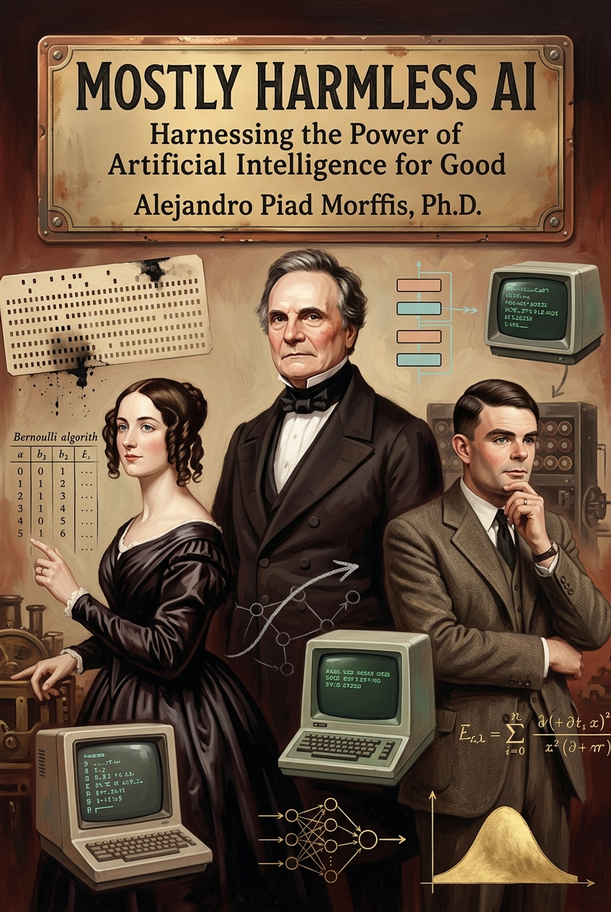

Mostly Harmless AI
Harnessing the Power of Artificial Intelligence for Good
Preface

For many, the last few of years mark the begining of the Age of Artificial Intelligence.
It started with the release of ChatGPT, often called the iPhone moment of AI. And while ChatGPT wasn’t a fundamental breakthrough in the scientific or technical advancement of the field, it undeniably marked the inception of the widespread use of AI. To this day, ChatGPT has already had a significant cultural impact. It has reshaped public perception and discourse surrounding AI, bringing awareness of its potential and ability to influence our lives. More than anything, it has made may of us seriously begin to ponder about some of the most profound questions regarding the nature of human intelligence.
For a long time, Artificial Intelligence had been in the collective imagination, from its portrayal in science fiction to many mildly successful attempts at practical applications. However, with ChatGPT’s release and the subsequent surge in large language models and chatbots, AI has finally become a pervasive technology, available for the general population, even if still nascent and unreliable.
Reasonably enough, many skeptics–myself included on occasions–question the authenticity and transformative potential of AI in its current form beyond the hype and excitement of the shiny new toy. Debates on whether AI is merely an illusion or a revolutionary force happen daily across all traditional and digital media.
In this short book, I want to analyze the evolving promises and expectations of AI in general, and the particular subfield of Large Langauge Models (which is what most people think of when they think of AI, at least today), highlighting the tremendous potential this technology carries and also the essential challenges and unresolved issues necessary for it to realize its intended potential.
Approaching the subject with a healthy balance of skepticism and optimism, I will critique the current state of generative AI from the perspective of a deeply optimist machine learning researcher who loves the field. I will re-examine the most impactful milestones that brought us here and assess the challenges and obstacles ahead.
By the end, I hope you share with me the excitement of being in the early days of what could potentially be the most important invention of our civilization, with the necessary suspicion and open-mindedness to understand the path forward isn’t guaranteed.
Why do I care
For as long as I can remember, I’ve been captivated by the idea of artificial intelligence. It’s a field that constantly pushes the boundaries of what we thought was possible, blending the rigor of mathematics and logic with the boundless creativity of human thought. This fascination led me to pursue a Ph.D. in Machine Learning, where I now work at the exciting intersection of language modeling and abstract reasoning.
My journey into AI isn’t just theoretical; it’s deeply personal and rooted in real-world application. I’ve had the privilege of creating Cecilia, the first Cuban language model, a project that showed me firsthand the transformative power of AI when applied to specific cultural contexts. And for years, I’ve shared my insights and passion for AI and programming as a professor in the Computer Science department at the University of Havana, witnessing the spark of understanding in my students’ eyes as they grasp these complex concepts.
A few years ago, I laid out much of my core philosophy in “The Techno-Pragmatist Manifesto”. I have reproduced it in this book, as it serves as the guiding philosophy for the chapters that follow and, more broadly, for everything I write and do with respect to technology. This isn’t just an academic stance for me; it’s how I approach AI. I believe we stand at a unique moment in history, where this incredibly powerful technology is no longer confined to research labs but is becoming accessible to everyone.
And that’s precisely why I care so deeply, and why I believe you should too. AI isn’t just a tool; it’s a force that’s reshaping our world, from how we work and learn to how we create and connect. It offers immense potential for good, for solving some of humanity’s most pressing problems and ushering in an era of abundance. But with such power comes responsibility, and a host of complex challenges—from ethical dilemmas to societal disruptions—that we must navigate together.
The techno-pragmatist philosophy, which guides my work and this book, is rooted in a fundamental belief: the future is not predetermined. We, as individuals and as a collective, possess the power to choose among many potential futures. This isn’t about blind optimism or paralyzing fear; it’s about embracing our responsibility to make choices based on reason and evidence, always respecting the diverse interests of all our fellow humans and being thoughtful about our planet and future generations. Technology, including AI, is a reflection of our decisions. It’s not inherently good or bad, but its impact is profoundly shaped by how we choose to employ and integrate it into our lives.
My goal with this book is to share my perspective as someone who lives and breathes AI, not just as a researcher, but as an educator and a techno-pragmatist. I want to equip you with the understanding and insights you need to cut through the hype and the fear, to see AI for what it truly is: a powerful technology that we, as a collective, have the agency to shape. Whether you’re a student, a professional, or simply curious about the future, there’s a place for you in this conversation. Understanding AI isn’t just for experts anymore; it’s for everyone who wants to make the best of this new era and contribute to a future where AI truly serves humanity.
What you will find in this book
This book is designed to be your comprehensive guide to understanding artificial intelligence, its incredible potential, and the critical considerations we must all bear in mind as it reshapes our world. We’ll embark on a journey through the core concepts, practical applications, and significant challenges of AI, ensuring you have the knowledge to navigate this new era.
Part I: Foundations of AI will lay the groundwork, demystifying what AI truly is and how the most powerful systems, like large language models, actually work. You’ll discover the mechanics behind these “thinking machines” and learn practical techniques for deploying them, including strategies for effective interaction, enhancing their knowledge, and extending their capabilities with external tools. This part also explores how these powerful models are made more efficient for real-world use.
Part II: Applications of AI shifts our focus to the tangible ways AI is transforming various fields. You’ll explore how AI can accelerate discovery and decision-making, how it’s changing software development, and its profound impact on how we teach and acquire knowledge. We’ll also examine how AI influences everything from creative endeavors to government policy and regulation.
Finally, Part III: Dangers of AI addresses the critical challenges and risks associated with this powerful technology. We’ll confront the complex problem of ensuring AI’s goals align with human values, explore the inherent limitations of current AI systems, and discuss the actual risks, from potential societal disruptions to ethical dilemmas and biases. This part is crucial for a balanced understanding and responsible engagement with AI.
No matter your background, this book has something for you.
If you’re a student or a lifelong learner, you’ll gain a solid foundation in AI’s core concepts (Part I) and understand its revolutionizing impact on education. For professors and educators, Part II offers insights into AI’s role in the classroom and how it can enhance learning through personalized feedback. Researchers and decision-makers will find value in understanding AI’s capabilities for analysis and discovery, alongside a deep dive into its inherent limitations and risks (Part III).
If you’re a software developer, you’ll find practical guidance on deploying AI techniques and a comprehensive look at how AI is changing coding. Creative professionals will discover how AI can augment their artistic processes. And for policy-makers and regulators, Part III provides essential context on the societal impacts and ethical considerations necessary for responsible AI governance.
How to read this book
This book has been designed to be read from top to bottom. [cite_start]The three parts build on each other, moving from the foundational theory of AI [cite: 420][cite_start], to its practical applications [cite: 1778][cite_start], and finally to a nuanced discussion of its dangers and limitations[cite: 2413].
However, I encourage you to use this book in the way that best serves your interests. On a first read, you might choose to forge your own path:
- If you are most interested in practical, hands-on advice, you can skip the deeper theory in the latter sections of Part I and jump straight to the application-focused chapters of Part II.
- If your primary concern is the ethical and societal impact of this technology, you might dive directly into Part III to grapple with the risks and limitations, and then return to Part I later for a deeper understanding of the mechanics that give rise to these challenges.
If you read nothing else, I urge you to start with Chapter 4, “AI for Critical Thinkers”. It contains the most practical, day-to-day advice and establishes the essential mindset for using AI as a “cognitive partner,” a theme that underpins all the chapters that follow.
That said, I do recommend reading the entire book from beginning to end, even if on a second pass. A complete reading will allow you to appreciate the full nuance of the discussions and see how the technical, practical, and philosophical threads are woven together. Afterward, I hope you will keep it as a bedside reference to return to as you continue your journey in this new era.
A note on AI’s role in this book
In the spirit of transparency, and to practice the principles I advocate for within these pages, it is important to disclose the role that artificial intelligence played in the creation of this book. As I argue in the chapter “AI for Educators and Learners,” transparent disclosure is a cornerstone of ethical and responsible engagement with these powerful tools.
Throughout the writing process, I have used AI applications like Google’s Gemini and Perplexity as cognitive partners. Their role was that of an assistant, not an author. These tools were used to craft background research reports on several topics, to help outline the initial structure of some chapters, to draft new sections or rewrite older blog posts into a tone and style consistent with the book, and to provide criticism and feedback on the style, grammar, and structure of my writing as it evolved.
However, every idea, argument, and conclusion presented here–especially the core techno-pragmatist framework–is my own. Every chapter, section, and paragraph has been thoroughly reviewed, revised, and heavily edited by me to ensure it aligns with my voice and intent. This workflow is a direct application of the deeply human-centric approach I champion throughout the book: using AI as a tool to augment and accelerate human intellect, not replace it. You, the reader, are holding a work that is human-authored, with AI serving as a powerful but subordinate tool in its construction.
Let’s keep in touch!
If you’d like to stay updated on these discussions, subscribe to my blog, The Computist Journal, and receive new posts directly in your inbox. I look forward to having you join the conversation!